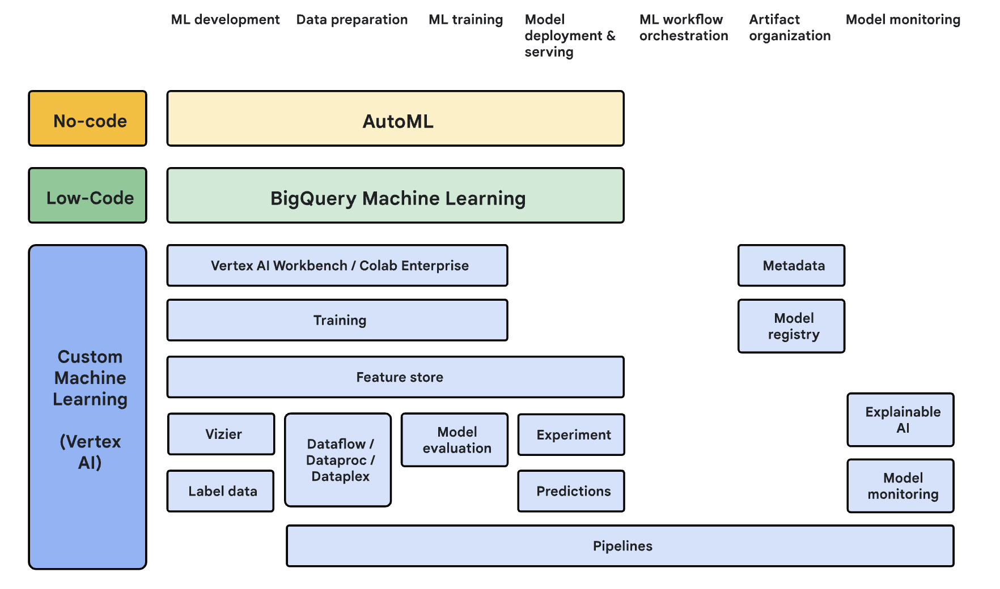
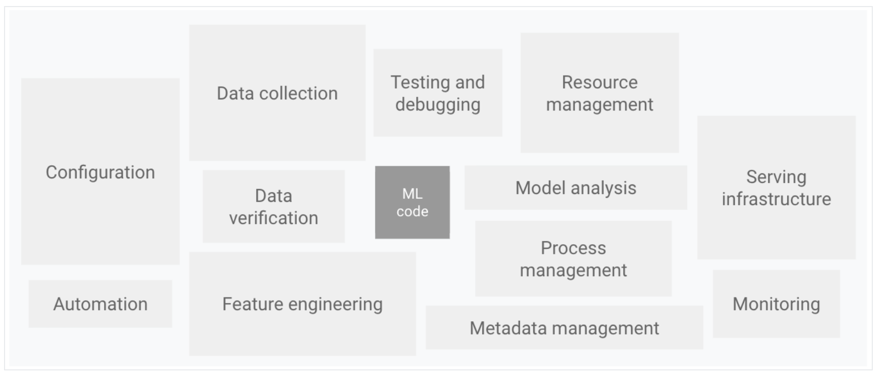
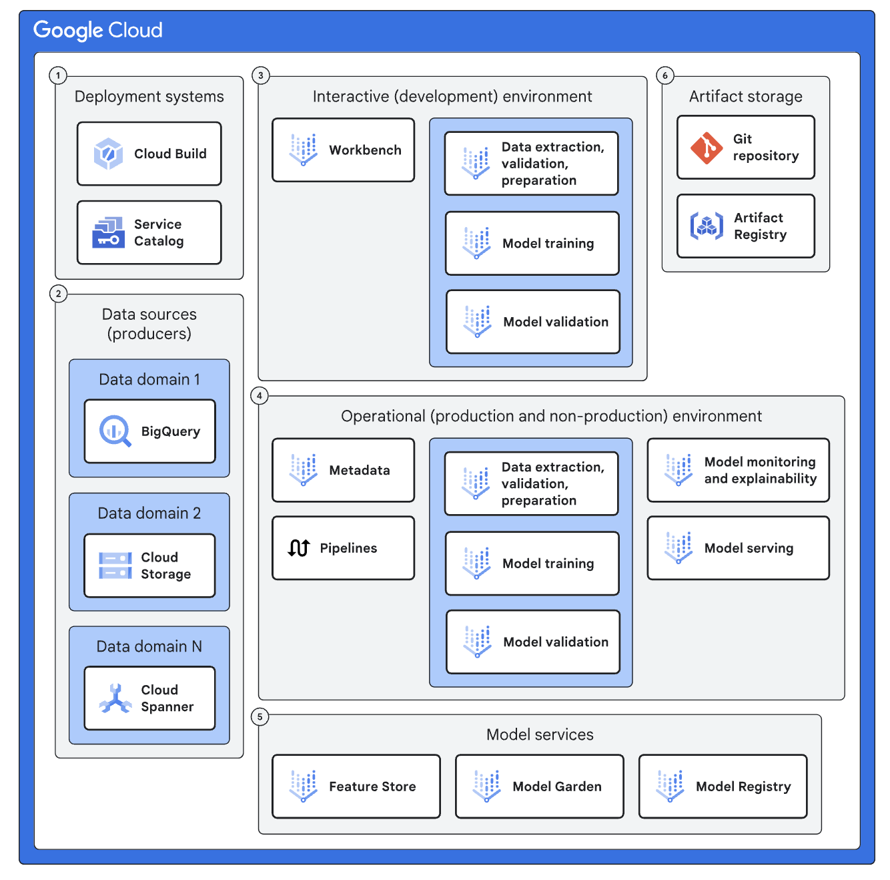

Machine Learning on Google Cloud

MLOps: Continuous delivery and automation pipelines in machine learning
Real challenge isn't building an ML model, the challenge is building an integrated ML system and to continuously operate it in production.
MLOps is a set of practices that improves the stability and reliability of your ML systems.
As shown in the following diagram, only a small fraction of a real-world ML system is composed of the ML code. The required surrounding elements are vast and complex.

Core Challenges
| Business Outcome and Impact |
Data Scientist Experience |
Governance and Compliance |
Technical Complexity |
- Lack of visibility into model business impact
- Revenue impact from model performance degradation
- Need to reduce time-to-market for AI initiatives
- Analysis of business impact to cost of ML & AI initiatives
|
- Complex tooling and infrastructure setup
- Need to reduce cycles for experimentation
- Access to production-grade compute resources
- Difficulty collaborating across teams
- Limited visibility into model behavior and performance
|
- Cost management and resource optimization
- Model Governance Requirements:
- Model versioning and lineage tracking
- Model performance monitoring and drift detection
- Model validation and approval workflows
- Model documentation and explainability
- Model bias detection and fairness metrics
- Security and access control requirements
- Regulatory compliance (GDPR, CCPA, etc.)
- Data privacy and sovereignty
|
- Infrastructure management across environments
- Data pipeline orchestration and monitoring
- Development to production deployment gaps
- Operational consistency and reproducibility
- Scaling compute resources efficiently
- Managing dependencies and artifacts
|
Onix MLOps Solution
| Business Outcome and Impact |
Enhanced Data Scientist Productivity |
Enterprise Governance Framework |
Technical Infrastructure |
- Business impact dashboards and reporting
- Real-time model performance monitoring with business KPI correlation
- Automated model retraining based on performance thresholds
- A/B testing infrastructure for model deployment
- Rapid model deployment capabilities
|
- Managed Vertex AI Workbench environments
- Integrated development tools and notebooks
- Automated ML pipelines and experimentation tracking
- Pre-built templates and components
- Collaborative workspace with version control
|
- Cost optimization and resource management
- Comprehensive model governance platform:
- Automated model validation and testing
- Model registry with versioning
- Performance monitoring and drift detection
- Explainability tools and bias detection
- Security controls and audit logging
- Compliance automation and reporting
|
- Fully managed MLOps platform on Google Cloud
- Automated CI/CD pipelines for model deployment
- Integrated data management and feature store
- Environment parity between development and production
- Scalable compute resource management
- Monitoring and observability tools
|
Here is the blueprint we deploy:

This architecture illustrates our comprehensive MLOps solution. The deployment systems, including Service Catalog and Cloud Build, manage resource deployment across both interactive and operational environments. Data is hosted across various services like BigQuery, Cloud Storage, Spanner, and AlloyDB for PostgreSQL.
The interactive environment enables direct experimentation with data and model development, while the operational environment ensures repeatable, production-ready model building and deployment. Key model services include Vertex AI Feature Store for feature management, Model Garden for accessing pre-built models, and Vertex AI Model Registry for model lifecycle management.
Artifact storage is handled through Artifact Registry for pipeline containers and Git repositories for component source code, ensuring proper version control and reproducibility of the entire ML system.
Platform Personas
- MLOps Engineer Group: Develops Terraform templates for Service Catalog, providing templates used across multiple models
- DevOps Engineer Group: Approves Terraform templates created by MLOps developers
- Data Scientist Group: Develops models, pipelines, and containers used by pipelines, typically focused on single model development
- Data Engineer Group: Approves the use of artifacts created by the data science group
Organization Structure
Projects are organized by the following folder structure:
- Common Folder: Contains infrastructure pipeline and Service Catalog resources
- Development Folder: Houses components for interactive AI/ML development
- Non-Production Folder: Contains components for testing and evaluation
- Production Folder: Manages components for production deployment
Operations
Interactive Environment
The interactive environment enables data exploration and model development while maintaining security. Resources can be deployed through:
- Service Catalog: Pre-configured templates with automated resource deployment
- Vertex AI Workbench: For building and committing code artifacts to Git repositories
Operational Environment
The operational environment manages production and non-production deployments using Git repositories and pipelines. It includes:
- Cloud Composer Pipelines: For workflow orchestration
- Vertex AI Pipelines: For ML-specific workflow management
- Model Promotion: Systematic process for moving models through environments
Cloud Infrastructure
Networking Setup
- Shared VPC Network: Enterprise foundation blueprint integration
- Private Service Connect: Secure access to Google Cloud APIs
- VPC Service Controls: Environment protection and data security
Cloud Services Integration
- Cloud Logging: Enterprise foundation blueprint capabilities
- Cloud Monitoring: Custom training job metrics and alerts
- Cloud Storage: Unstructured data storage
- BigQuery: Structured and semi-structured data management
Deployment Pipeline Structure
- Infrastructure Pipeline: Provisions core Google Cloud resources
- Interactive Pipeline: Manages Terraform templates for Service Catalog
- Container Pipeline: Builds and manages immutable container images
- Operational Pipeline: Handles model building, testing, and deployment
Monitoring & Logging
Training Metrics
- CPU Utilization: Per-node training metrics
- Memory Usage: Training node memory monitoring
- Network Performance: Training job network metrics
Model Performance Monitoring
- Predictions per Second: Model serving performance
- Model Latency: Response time tracking
- Resource Usage: CPU and memory consumption monitoring
- Alerting: Email notifications for training job failures
Service Catalog Integration
Service Catalog enables controlled resource deployment through:
- Template Management: MLOps engineers create and maintain Terraform templates
- Automated Deployment: Cloud Build CI/CD pipeline for template publishing
- Access Control: Managed sharing with interactive environment projects
- Configuration Control: Template variables for controlled customization
Repository Management
Pipeline changes are managed through dedicated repositories with strict access controls:
- ml-foundation: Infrastructure Terraform code (MLOps → DevOps)
- service-catalog: Service Catalog templates (MLOps → DevOps)
- artifact-publish: Pipeline containers (Data Scientist → Data Engineer)
- machine-learning: Operational source code (Data Scientist → Data Engineer)
Branching Strategy
The blueprint uses persistent branching (development, non-production, and production) aligned with corresponding environments.
Security Controls
- Interface Layer: Managed notebooks, Git repositories, and Service Catalog with controlled access
- Deployment Layer: Secured pipelines for infrastructure, containers, and model deployment
- Network Layer: Private Service Connect, VPC with private IPs, and VPC Service Controls
- Access Management: Cloud Identity and IAM for fine-grained access control
- Encryption Layer: Cloud KMS, Secret Manager, and default encryption mechanisms
- Detective Layer: Security Command Center, IAM Recommender, and monitoring tools
- Preventative Layer: Organization Policy Service for action restrictions